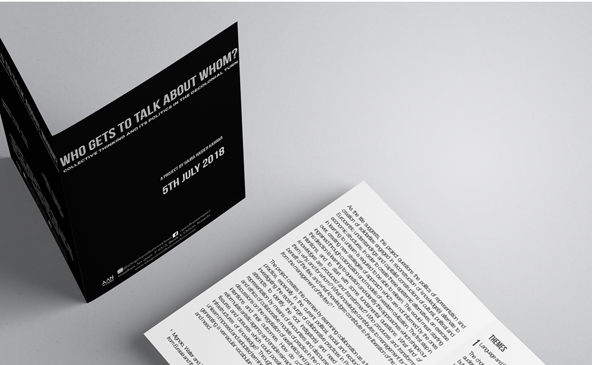
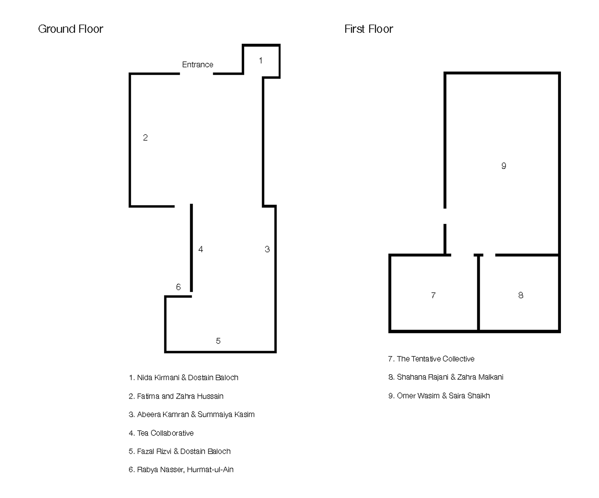
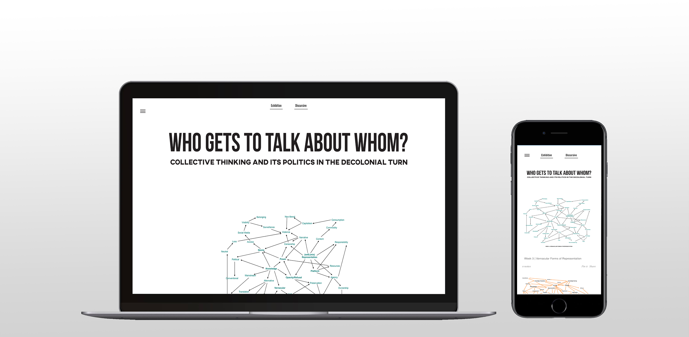

Who Gets To Talk About Whom?
Institution:
Gandhara Art Space
Role:
Graphic Designer
Year:
2018
Team:
Hajra Haider Karrar (Curator) Fiza Khatri(Assistant Curator)
An exhibition and discursive program about the politics of representation
The program examines collaboration as a form of artistic practice, in light of the political, social and ecological climate.
Collateral Design


Website
We designed the website by mimicking the structure of the exhibition dividing it into two sections: exhibition and discursive. The exhibition section featured the artists and their work while the discursive section featured the participants of these sessions as well as a list of resources categorised by theme. We had to build the site on Tumblr as it was the most cost effective method. As such we also faced technical limitations and had little control over the CSS and had to code in HTML.
